ARMA process estimation¶
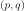
or a range of orders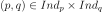
, where![Ind_p = [p_1, p_2]](../../_images/math/ba1236067b2dfc9aa7caf58f063bbdea97cf35c5.svg) and
and 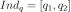
, the methods aims to find the best model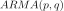
that fits the data and estimate the corresponding coefficients. The best model is considered with respect to the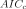
criteria (corrected Akaike Information Criterion), defined by:
where
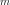
is half the number of points of the time grid of the process sample (if the data are a process sample) or in a block of the time series (if the data are a time series).

Two other criteria are computed for each order :
the AIC criterion:
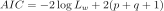
and the BIC criterion:

 ,
,  and the
variance
and the
variance  is done using the Whittle estimator which is
based on the maximization of the likelihood function in the frequency
domain.
is done using the Whittle estimator which is
based on the maximization of the likelihood function in the frequency
domain. and a particular order .
Using the notation ([dim1]), the spectral density function of the
process writes:
and a particular order .
Using the notation ([dim1]), the spectral density function of the
process writes:(1)¶
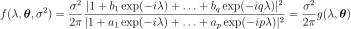
where
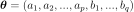
and is the frequency value.
is the frequency value.
The Whittle log-likelihood writes:
(2)¶
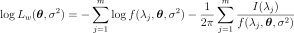
where:
 is the non parametric estimate of the spectral density,
expressed in the Fourier space (frequencies in
is the non parametric estimate of the spectral density,
expressed in the Fourier space (frequencies in ![[0,2\pi]](../../_images/math/62463b22f3ec72cd74add0f200e76eb8f73199a0.svg) instead of
instead of 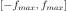
). By default the Welch estimator is used.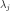
is the Fourier frequency,
Fourier frequency,
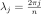
, with
the largest integer
with
the largest integer  .
.
We estimate the  scalar coefficients by maximizing the
log-likelihood function. The corresponding equations lead to the
following relation:
scalar coefficients by maximizing the
log-likelihood function. The corresponding equations lead to the
following relation:
(3)¶
where  maximizes:
maximizes:
(4)¶
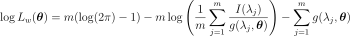
The Whitle estimation requires that:
the determinant of the eigenvalues of the companion matrix associated to the polynomial
 are
outside the unit disc,, which garantees the stationarity of the
process;
are
outside the unit disc,, which garantees the stationarity of the
process;the determinant of the eigenvalues of the companion matrix associated to the polynomial
 are
outside the unit disc, which garantees the invertibility of the
process.
are
outside the unit disc, which garantees the invertibility of the
process.
Multivariate estimation
 be a multivariate
time series of dimension
be a multivariate
time series of dimension 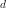
generated by an ARMA process where are supposed to be known. We assume that the white noise is
distributed according to the normal distribution with zero mean and
with covariance matrix
is
distributed according to the normal distribution with zero mean and
with covariance matrix
 where
where
 .
. ,
then
,
then  is normal with zero mean. Its covariance matrix
writes
is normal with zero mean. Its covariance matrix
writes
 which depends on the coefficients
which depends on the coefficients  for
for
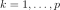
and and on the matrix .
.The likelihood of writes:
(5)¶
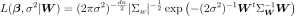
where
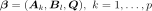
, and where denotes the determinant.
denotes the determinant.
The difficulty arises from the great size ( ) of
) of
 which is a dense matrix in the general case.
[mauricio1995] proposes an efficient algorithm to evaluate the likelihood
function. The main point is to use a change of variable that leads to a
block-diagonal sparse covariance matrix.
which is a dense matrix in the general case.
[mauricio1995] proposes an efficient algorithm to evaluate the likelihood
function. The main point is to use a change of variable that leads to a
block-diagonal sparse covariance matrix.
The multivariate Whittle estimation requires that:
the determinant of the eigenvalues of the companion matrix associated to the polynomial
 are
outside the unit disc, which guarantees the stationarity of the
process;
are
outside the unit disc, which guarantees the stationarity of the
process;the determinant of the eigenvalues of the companion matrix associated to the polynomial
 are
outside the unit disc, which guarantees the invertibility of the
process.
are
outside the unit disc, which guarantees the invertibility of the
process.
API:
See
WhittleFactorySee
WelchFactorySee
ARMA
Examples: